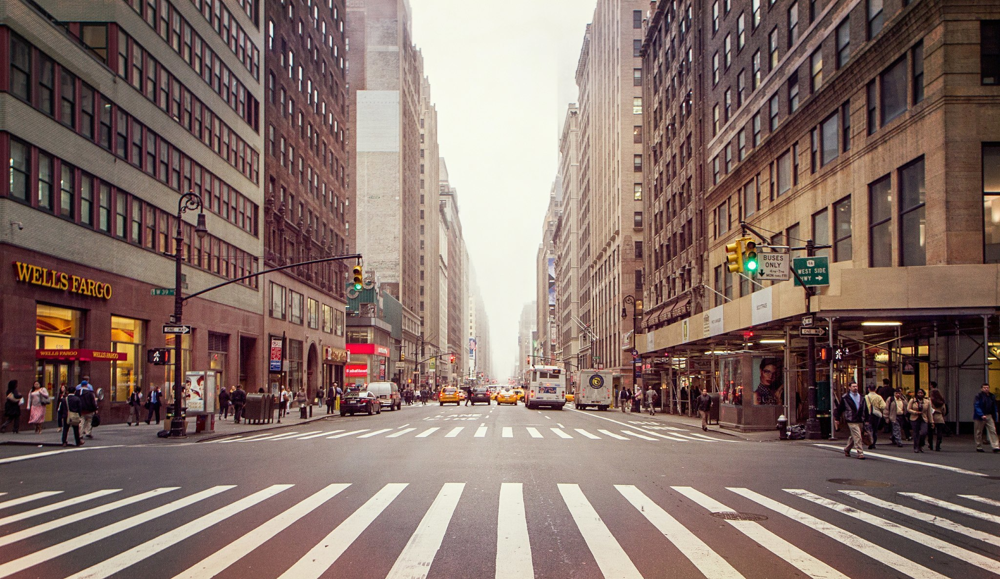

<div class="TimeLineCard"> 
	<div class="content">
          
       </div>
 <div class="navigation">
  <!-- <!--   <!-- title  --> 
  <span class="title"> 
    Нахрани коте
  </span>
    <!-- Slide to the left  --> 
<div class="arrows-right" ng-click="nextSlide()"><i class="ion-ios-arrow-forward"></i></div> 
  <!-- Slide to the right --> 
<div class="arrows-left" ng-click="previousSlide()"><i class="ion-ios-arrow-back"></i></div> 
 </div>
<div class="footer"> 
    <span class="ng-binding"> 
      <a class="fa item-avatar" href="#"> 
         
      </a> 
    </span> 
     <span class="ng-binding">  
      <i class="ion-ios-location-outline"></i> 
      Пловдив
    </span> 
    <span class="ng-binding"> 
      <i class="icon ion-ios-timer-outline"></i> 
      23:56
    </span> 
    <span class="info" style="margin-left: -1%;"> 
      <i class="fa-size app-icon-user-active"></i> 
   34
    </span> 
    <span class="info" style="margin-left: -1%;"> 
      <i class="fa-size app-icon-speech-active"></i> 
      390
    </span> 
    <span class="info" style="margin-left: -1%;"> 
          <i class="fa-size app-icon-love-active"></i> 
     4
    </span> 
     <span class="ng-binding" style="width: 100%;">  
    <h5>Приключва:</h5> 
      33:55 часа
    </span> 
  </div> 
</div>